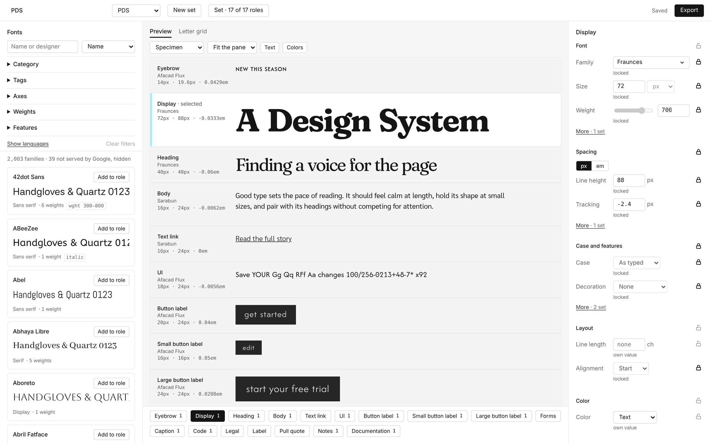
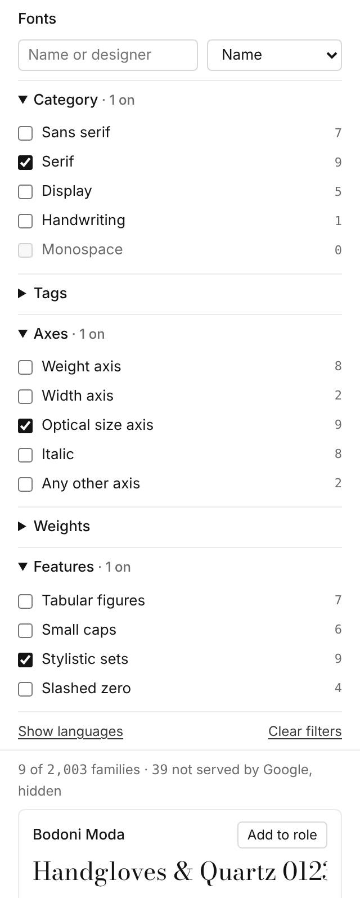
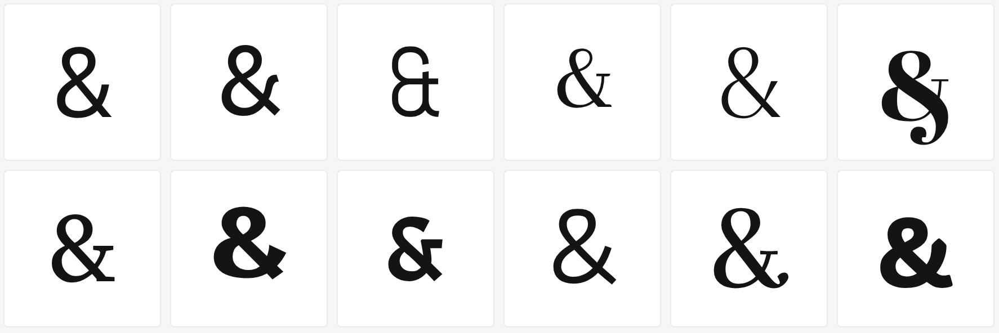
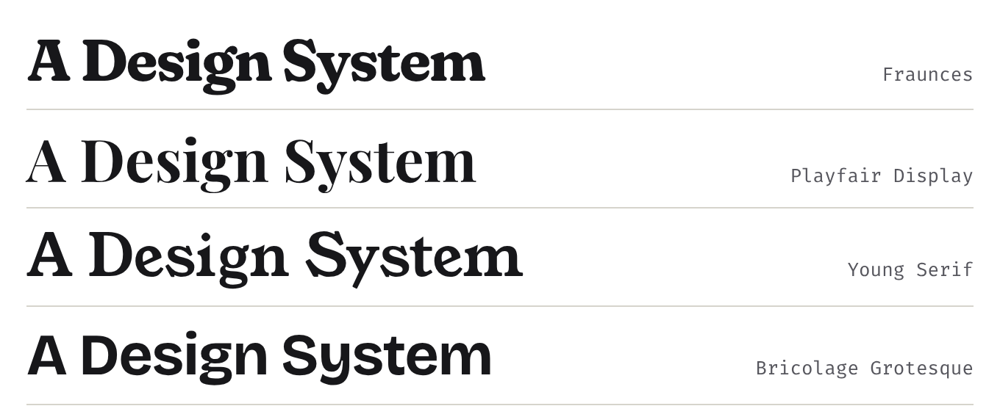
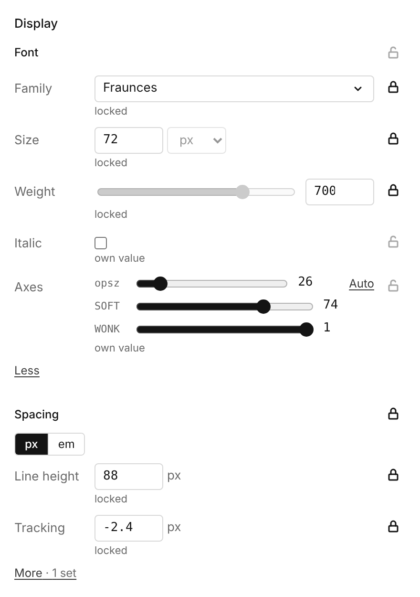
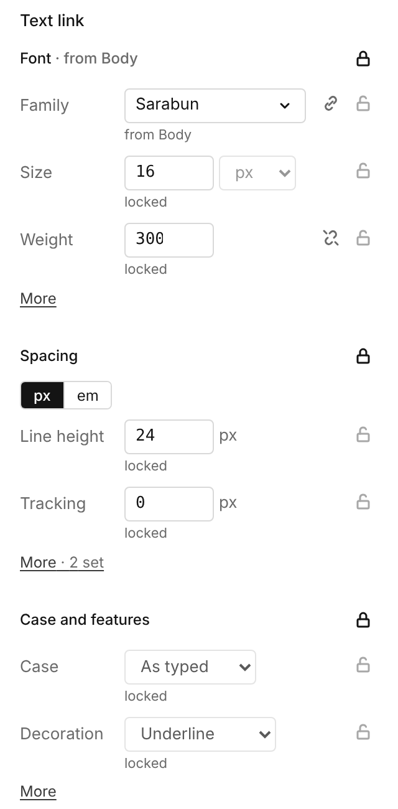
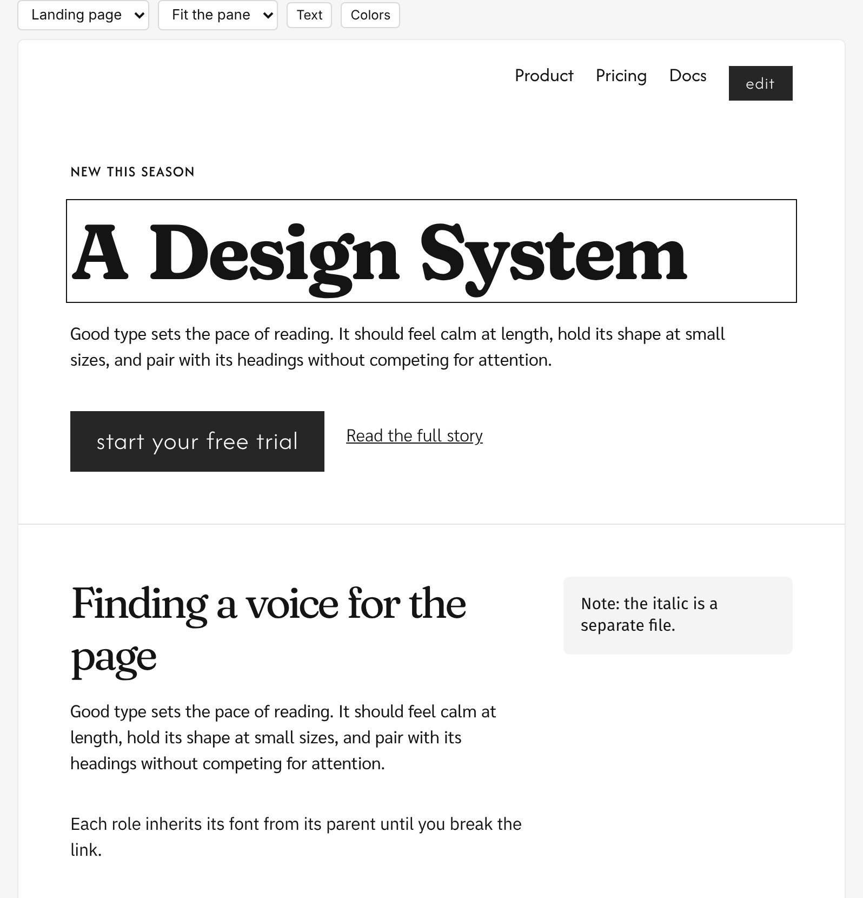

A personal project · live at fonts.puddnsnacks.com
The quality of character.
DisplayBricolage Grotesque 700
Choosing a design system's type means auditioning about two thousand faces, one tab at a time. Character Study sets the same letters in every Google Fonts family at once, lets a designer cast a face for every role, and exports the whole system as code. The machine does the reading and measuring. The person does the choosing.
EyebrowAfacad Flux14/19.6
One set, eight roles
DisplayBricolage Grotesque 70072/88
Read first.
HeadingFraunces40/48
Every section gets a name
BodySarabun16/24
Body carries the reading. It stays calm at length, holds its shape at small sizes, and never competes with its headings.
Button labelAfacad Flux20/24
Pull quoteFraunces italic28/36
A pull quote slows the reader down.
CaptionFira Sans13/16
Fig. 2 · A caption says what the picture means.
CodeFira Code15/24
/* every role ships as code */

02
The problem
A long evening of tabs.
Google Fonts serves about two thousand families, and most people meet them one at a time, a tab for every candidate. Find a face you like, and the hunt starts over for the second one. Then the pair you loved on its own falls apart beside real content, at real sizes.
Once we've spent all that time and effort choosing a primary typeface for our project, we get to do it all over again for a secondary typeface.
A pairing isn't a type system.
A system is a cast of roles (eyebrow, heading, body, button, caption, code), each with its own weight, size, spacing and features. Faces at the same size take up different room, so a face swapped late moves everything it touches.
The pairing generators answer by choosing for you.
The x-height ratio "varies between fonts." · web.dev, font-size-adjust
03
The turn
Taste stays with the person.
Taste left to a machine makes the work feel one-dimensional and generic. So Character Study never scores or suggests a pairing. It does what machines are good at, reading every font file and setting every letter at once, and leaves every choice to the person using it.
AI here builds tools that make human decisions faster. It doesn't make them.
The machine
- Reads every font file
- Measures every letter
- Sets every family at once
- Traces the pick over every tile
The person
- Casts each role
- Writes down why
- Locks what's settled
The preview is the only colorful thing on screen.
A quiet room for loud type.
The brief set the rule plainly: "The interface must be understated, so it never distracts from the fonts being judged."
The tool's own chrome is the system font in grayscale, so it can never be mistaken for a candidate. All the color and personality on screen belongs to the type being judged.

A study is a place as well.
Michael Lombardi, on the name04
Search and filter
Narrowed by the numbers.
About two thousand families is not a shortlist. So the Fonts pane starts from what a role needs instead of from the top of the alphabet. Search by name or designer, then narrow by category, tags, axes, weights, features and languages.
Every option shows how many families it would leave before I click it, and an option that would leave none can't be checked. I never filter my way into an empty list and have to back out.

05
The audition
Shape before name.
Type one to four letters and the letter grid sets them in every matching family at once. The eye catches a shape it likes before it ever reads a name. Turn on compare, and the current pick is traced over every tile, aligned on the baseline, so the difference is visible instead of described.
The tool is mostly for finding font family combinations, so the font-finding parts get the most care.
The selected character set in two dozen Google Fonts families: Abril Fatface, Archivo Black, Bricolage Grotesque, Bungee, Caveat, Cormorant Garamond, DM Serif Display, EB Garamond, Fraunces, Gloock, Instrument Serif, Italiana, Josefin Sans, Libre Bodoni, Lobster, Major Mono Display, Pacifico, Playfair Display, Rye, Space Grotesk, Syne, Unbounded, UnifrakturMaguntia, Young Serif.

06
Casting
A reason on the record.
Every role holds a short list of candidates. Each one gets a verdict, keep, maybe or no, and a one-line reason that is saved with the set, so the decision outlives the meeting where it was made. What's settled gets locked, so trying a new candidate never moves a value already decided.
A Design System
Candidate 1
A Design System
Candidate 2
A Design System
Candidate 3
A Design System
Candidate 4

Saved with the set
No verdicts yet. Call one, and it lands here with its reason.

07
Editing options
A family resemblance.
Most roles in a type system are relatives. Text link and Caption start from Body, and the button labels start from UI. So each role takes its font from its parent until I break the link, and every value in the inspector says where it comes from: from Body, own value, or locked.
Each role has its own Font, Spacing, Case and features, Layout and Color, with the rarer settings behind More. Size, line height and tracking get a phone value too, scaled from the desktop size until I set my own. What the inspector holds is what the export writes: a custom property for every value and a class for every role.

08
Honest data
Fonts fib.
Never fill in a plausible guess.
Font files describe themselves, and some of them are wrong. Macondo declares an x-height of 0.024 em. Its letter x actually measures 0.456 em. Character Study measures the letters themselves, keeps the declared value beside the measured one, and flags any gap over ten percent. About a fifth of the families have an x-height or cap height more than ten percent off.
09
The preview
The page before the page.
A face that looks right alone can fall apart beside the rest of the cast. So the preview sets the whole system the way it will be used. Landing page puts every role on one page, from the nav and the headline to the buttons, a form, code and the footer, so the roles get judged together instead of one at a time.
It fits the pane or holds a real width, down to a phone's 390 px. Text swaps my own sample into every role, and Colors tries the page in light and dark with the contrast checked. Click any line and its role opens in the inspector.

10
Proof
Cast, then shipped.
I used Character Study to cast the type for my own design system: Bricolage Grotesque for display, Fraunces for headings, Sarabun for reading, Afacad Flux for the interface, Fira Sans for the small print, Fira Code for code and IBM Plex Sans for documentation. The CSS it exported became the system's type file almost unchanged.
The cast
Bricolage Grotesque
Display
Fraunces
Heading · Pull quote
Sarabun
Body · Text link
Afacad Flux
UI · Button labels · Forms · Label · Eyebrow
Fira Sans
Caption · Legal · Notes
Fira Code
Code
IBM Plex Sans
Documentation
Only the font import moved. Google's served files strip out stylistic sets, so Fraunces and Afacad Flux are hosted with the system instead. I found it the way a user would, setting my own type and testing it.
Self-hosted fileStylistic set 1 on
Ragged & wonky
Self-hosted fileStylistic set 1 off
Ragged & wonky
Google's served fileStylistic set 1 requested
Ragged & wonky
Loads only the weights, italics and axis values the set uses. Hidden attributes are left out. Phone sizes apply under 900 px.
A set file imports into Character Study on any browser.
11
What I did
My brief, my calls.
Literally a tool to aid in designing design systems.
I wrote the brief as law for the coding agent, with four checkpoints where the build stopped for my approval, and made the product calls: no pairing suggestions, measure the letters, quiet chrome, export a system and not a pair. It went from an empty repository to live in about ten hours.
From the agent brief
Working rule 3
Never invent data. Font facts come from the font files or Google's metadata. If a value can't be found, store null, log why, and let the UI show "unknown." Never fill in a plausible guess.
The tool's own look, on the system font
It is so common it reads as invisible, it needs no download, and it can never be mistaken for a candidate.
Credit
- Product idea
- UX and UI direction
- The agent brief
- Data rules
- QA at four checkpoints
- Built with an AI coding agent
Type gets chosen early, in context, with the reasons written down, and it ships to the team as code.